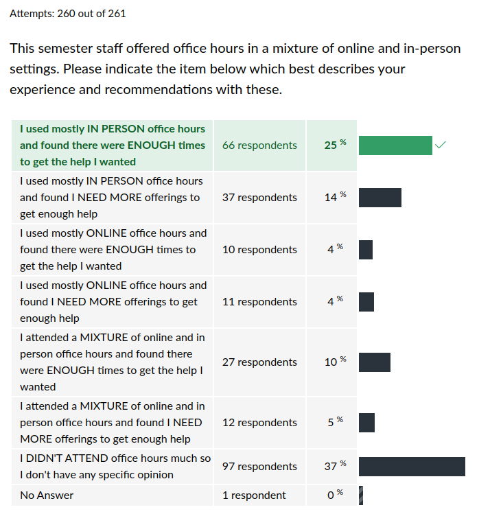

CSCI 2021 Exit Survey Results
Table of Contents
Summary Statistics for Multiple Choice Questions





Freeform Feedback
Frequent Items in Freeform Feedback
| Count | Comment |
|---|---|
| Overall | |
| 242 | Total Respondents |
| 4 | Link Gradescope scores & deadlines to Canvas Working on it; turns out to be tricky to do in the middle of a semester |
| 3 | Want a way to track Engagement Points EPs are #Labs completed + Bonus - Late days. You have access to all of but yes, must count them yourself. |
| 2 | Last Unit felt rushed after Exam 3 We'll consider schedule adjustments for the future as the last project did feel rushed. |
| 2 | During Unified Office Hours, try presenting to groups of students We did this, perhaps you missed it? |
| 2 | More online office hours In-person classes means mostly in-person office hours. Try an online class. |
| Exams | |
| 3 | Sitting space is too cramped during exams, need a bigger room Agreed but little can be done; see below. |
| 2 | Distribute practice exams earlier Not likely to happen but thanks for the suggestion. |
| Projects | |
| 12 | Projects should be weighted higher in overall grade calculation See below. |
| Labs/HWs | |
| 3 | HW is too easy to click through, no incentive to learn. See below |
Props to Staff Members
A number of staff members were individually thanked by students in their free-form feedback for help during the semester.
| Thank-yous | Staff Member |
|---|---|
| 3 | Ani |
| 4 | Ash |
| 1 | Aydin |
| 4 | Caroline |
| 1 | David |
| 2 | John |
| 5 | Joon |
| 3 | Maxwell |
| 3 | Mohamed |
| 2 | Ngan |
| 4 | Preeti |
| 5 | Safwan |
| 2 | Sean |
| 4 | Tarik |
| 17 | All TAs |
Notable Freeform Responses
Student comments are given in plain face.
Instructor responses are italicized.
Lectures
- In one of my other classes, there are questions posed during lecture that everyone answers that are evaluated after class. While I realize this may take more time, I do think it's more equitable.
I have considered such systems in the past. They come in a couple flavors. However, it is extremely difficult to both reward only those that come to class while not requiring attendance. If you suggested this and read my response, email me more about the details of what your other class did as I'm curious how the threaded this needle.
- I really like the idea of engagement points and how the labs were not points on their own, but part of the whole engagement points category.
While not perfect, I think folks who attend lecture regularly, complete labs, and are otherwise putting forth a good faith effort should earn the right to submit projects late occasionally or get a bump to their overall grade.
Office Hours
I think instead of queues for first come first serve it could be like categories and people sign up under it and the Ta holds the specific topic explanation at a certain time.
In theory, this might help but would create a lot of coordination work for the staff and would like seem unfair to many students: what is a staff member holding office hours on Problem 1 supposed to say to a student who wants to talk about Problem 2?
Staff have resolved to hold some independent, non-office hour tutorial sessions on aspects of the project in the future. This may help in the way that you are indicating would be appreciated.
I didn't like how … people come in early [to office hours] to say they'll be back later which makes them a priority when they return and makes others who are there wait longer.
I agree that the "queue camping" and other tactics some students utilized to manipulate the system are not acceptable. We will likely implement policies that prevent this in the future.
The lines are ridiculous and I should not have to skip my other classes to spend 4 hours waiting to talk to a TA.
I am afraid that lines for shared resource is a common phenomenon in life. If you've not been to the DMV, I envy you. However, in university help from staff is a privilege and also a limited resource. If you are disappointed by how limited that resource is, write to your senator/representative to get the department more money to make class sizes smaller and up the staff-to-student ratio. Until then, be patient and active as you wait. Speaking of which…
During unified office hours, I would spend the entire day there, often over 12 hours (as TAs would stay late and I would come early), yet in that time, I was likely only helped for about 25 minutes cumulative. There were multiple times that I sat in office hours for 3+ hours only to get help for 5 minutes because my question was incredibly basic. Maybe, you give us the ability to spend engagement points to get access to a VIP line?
"VIP" approaches have been pitched and I'd consider them but it would be tricky to pull off in a fair way. However, the major concern I have from this kind of comment is expresses an unhealthy reliance on staff help. If a problem can truly be solved in 5 minutes by a staff member, it worries me that a diligent student who is working on the same problem for 3+ hours is not able to find a solution on their own. It is especially worrying if this happens repeatedly in the same day. Staff help is to get students over humps or rough spots. Staff are not there to answer every small and large question about every detail. University education is intended to instruct students to formulate their on queries and solve their own problems. Keep that goal in mind and don't sit on your hands while waiting. Re-read the project specification, review labs, experiment, use internet searches to help identify the meaning of error messages, and be active. My favorite office hours encounter is "Oh, I actually solved that myself so you can go to the next person." Strive to find your own answers.
The throughput issue was a massive turn off for office hours this semester, and there were many times where I decided to just stick it out on my own, researching my errors on stack overflow rather than waiting a significant amount of time for the targeted help. While the TAs help would have been much more helpful than random, semi-related forum posts, it probably would have taken more time to get it than the time I spent flailing around on the internet.
Awesome. It may feel like flailing but your learning the most valuable skill: reading, filtering information, and learning from other people's experience. This is incredibly valuable for every student to master and I'm glad you've gotten a good start.
I'd personally prefer if this class had a github as 2041 does where students can commit their work to a repository for TAs to review, either online or in person as to reduce the amount of stress that it puts on students to have their code up and ready to show.
This is a frustrating issue for staff members as well. A shocking fraction of students, on getting TA attention, don't even have their code editor open and ready to discuss. Or, they will talk about what the code does and when asked demonstrate, find that their code doesn't compile due to tinkering. There is no easy remedy for this but it hurts throughput as TAs must either wait for readiness or iterate to someone else. We are discussing ways to solve this and I had not considered use of git/github. That is a can of worms that I'm uninterested in opening but I'll see what we can do.
When there's a queue for your OH the help you provide is half-assed! at best a theoretical solution to a small part of project Qs. not sure what the logic behind choosing to help with one of many part problem is but it seems that there was none put into it.
I gather you were not happy with office hours help. I'm sorry to hear that. Some of the things you expressed discontent for are my directives to staff on how to help: guide students to ask the right question which should be specific and answerable, and then help them answer it. The results of this are that staff will usually NOT write lines of code for you nor walk you through entire problem solutions. That's your job, to solve the learn to solve the exercises yourself.
- I have nothing but praise for how much help was provided to us while we struggled though it. It often wasn't enough for everyone to get help in a timely manner but it was still so amazing of the TAs and also Kauffman who spent so much time in the UOH.
- I didn't know such intelligent TAs were a thing. Every TA I interacted with explained everything so well. shoutout to the section 7 lab TAs.
- I really liked going to unified office hours, even if I didn't get help with the problem that I was stuck on, I liked being surrounded by people doing the same thing.
- I thought that the united office hours were really helpful, and having them more often would be helpful to a lot of students. There were many times where I came a half hour before regular office hours started, and wasn't able to even get help before they ended, so the united OH were a nice change.
- I really like the unified office hour. I'm a TA myself and I feel like OH not only make a really good use of time of TAs but also help students be more engaging in the OH.
Unified Office Hours were Caroline Heine's idea and have worked out smashingly from the staff's perspective. We are grateful to her for conceiving and implementing them and we will continue Unified OH in the future.
I really respect the thought and effort that was put into Unified Office Hours, but ultimately I didn't feel like they added any value over having normal office hours. For the 2-3 times I went to a Unified Office Hours, no matter the time I went, it was always flooded with at least a 20-student deep queue
Part of Unified Office Hours is to help staff manage the large office hours. This has prominence as a 20-deep student queue is demoralizing for a lone staff member but much less so for a group of staff members. It also creates continuity that a student who does not get helped at the end of a single TAs office hour is at the end of the queue for the next one whereas they are first up in Unified Office Hours. While we respect and value student opinions, staff universally liked Unified Office Hours and will continue them in future offerings of the course.
I'm a commuter so I would like to have more evening hours online because some days, I have classes all day and got home late, and most TAs have their evening in person so I couldn't attend any of it.
While I appreciate the conundrum you face, this is not an online university and this was not an online class. Most TAs indicate that they find offering in-person help to students more effective so opt in that direction. While we try to have some online office hours, it is not likely we will be able to cater to folks in your situation much. The only recourses are to stay on campus late some nights or enroll in online courses as much as possible.
Exams
I think projects should not be due the same week as exams.
In the past, we experimented with projects being due AFTER exams. This did not produce any less stress and resulted in marginally worse exam scores. We are on an ambitious schedule and will stick to projects due prior to exams which unfortunately means just before exams. Completing projects is the best way to prepare for exams.
A suggestion is maybe getting a different room for testing. It was challenging to have my laptop or notes out since the desk was tiny.
Andersen Hall is far from ideal for exam taking. Unfortunately, Professors have only a sliver of control over the classrooms their courses are assigned. If I had more control, we'd be in Keller all day every day.
If Kauffman could make the exams NOT with ASCII tables it would be much nicer for future students.
The best coders love ASCII tables and diagrams. You should too.
Projects
- Project walk-though videos are helpful. Keep doing them
I suggest [more walk-through videos] for future courses. Maybe to have the first one be a walk through or a homework assignment so people can really ease into it and sort of get an idea of how long (minimum) it could take to complete one project.
Kids these days love videos and I agree that they are an expedient way to convey information. We will likely continue providing overview and walk-throughs in the future.
Stagger the project due dates so that some students have them assigned and due a week earlier and other the week after, that way the load on office hours is more spread out. For fairness, the early/late due date groups would switch for each project, or people could even be allowed to choose which group they would prefer based on their schedule.
This would be extremely difficult to pull off and I anticipate disliked by most students. Still, I'll try to pitch it to future classes to see if they would be willing to be the guineau pigs in a pilot for it.
- I don't know [Project 1] takes that long to finish so I started the project one day before due. I spend 2 Engagement Points but still haven't finish problem 2. It really killed me.
- Project 1 and 3 were brutal, but they taught me a lot.
- Somehow I spent so much time on first project, and I did learn a lot from it.
- Just simplifying or shortening the projects would be very nice for future students. I definitely believe that the projects could be made significantly less time consuming while remaining just as useful as a teaching tool.
This may be unpopular with other students, but keep the difficulty of the projects as it is. Don't make it easier.
About 2/3 of folks on the Exit Survey indicated they were a "Modest Test of Strength" which is about where I like them to be on a the whole. A wide variety of students have led me to believe that the projects from this course were the first time they needed to spend several sittings to complete the program. This is an extremely important experience that I want folks who come through my courses to get. It automatically means that there will be more code to write and the complexity of that code will be higher. Without many such experiences, students will simply not be mentally prepared to write industrial applications. Projects will stay strong.
Labs / HW
- I went to labs for awhile, but it ended up being a do-on-your own situation where there were people around if you needed help, but there were no demos, so it was more convenient to do at home. I'm not saying this was bad or good for me, just elaborating on question 9.
When the TA was going over stuff, students and other TAs were busy already handling the lab so I couldn't really hear or know what the introduction was about.
Staff also commented that Labs could use some more structure and "script" to them. I'll consider how to implement this in the future. Unfortunately, there are a LOT of competing factors such as wanting to give students individual help during labs, not wanting to require attendance, and wanting to enable multiple staff members to assist students during labs. It's an interesting set of factors to combine.
Many people, including myself sometimes, would just [click through to] get the points and not care about the homework, because it's the easiest path.
HWs are intended to be easy to complete but allow for folks to extract more useful, enriching practice from them if they like. We may adjust the HW completion criteria somewhat but it is likely they will remain easy to complete.
One suggestion I would make is have a walkthrough for the labs and homework after they are due because I think it can be a valuable resource when studying for midterms.
Since we release solutions to the labs/hws and creating videos is rather a lot of work, I don't know that the staff will have the bandwidth to do this. It is unfortunately a low-priority item. Nonetheless, thanks for the suggestion.
Miscellaneous
It's a huge class and they still manage to provide a very individual learning experience - I had lots of 1:1 time with TAs when I needed it, and many of them encouraged me to reach out to them outside of office hours if I needed additional help.
Glad to hear you benefited from the structure.
Additionally, the multimodal format of the course, with both videos and in-person lectures was AMAZING!
Kids love them videos. We'll keep pumping them out. It's about the only positive lesson I learned from our recent plague.
I wished the projects were worth more, since they require more work, otherwise lessen the project load and keep the same weighted amount.
Projects are a lot of work. So is training for a marathon, gymnastics event, or musical performance. Unfortunately, the training/practice gets little attention, only the main event. Educational design usually centers around formative experiences (labs, HWs, projects) and evaluative assignments (exams) to determine the level of mastery achieved. I acknowledge that some students experience anxiety in exams which hurts their performance and may wish to see the project work carry greater weight. Unfortunately, we must also content with the reliability of the assignment scores. Projects have many supports through staff help and also many opportunities to cheat. I just completed my analysis of project plagiarism and found a substantial number of project submissions with the signs of plagiarism. I expect there are quite a few cases I am not detecting in addition to these. It is very hard to police a student who pays someone else to provide a new solution to project then submits it as their own. This has happened in the past and despite my not detecting any instances of it now, I expect it has happened this semester as well. That same student is likely to struggle to do well on an exam due to their lack of preparation. While exams have their own problems, in-person exams are the best way I know to actually attribute understanding to a single individual. If we had resources to do other forms of examination like individual oral exams, I would explore these. Right now though, project work has only a modest trust level and so will likely remain at a modest portion of the grade. Its real value is in preparing students to deliver on the exam for which most student report they do a good job.
The main source of stress from this course is that its deadlines match up almost exactly with those of CSCI 2041
Alas, the fiefdoms that are college courses do not coordinate much with one another. This is regrettable but also good practice for "real life" where you are likely to have a variety of competing demands on your time and need to plan/prioritize carefully.
My only comment would be that the workload seems quite large compared to other 4 credit csci courses.
The UMN has an official policy on this here: https://policy.umn.edu/education/studentwork. In brief, 1 credit is equates to about 3 hours of work per week for "an average grade." Thus a 4-credit course like CSCI 2021 would take 12 hours per week of work for that average grade. Taking 15 credits in a semester is 42-45 hours per week to pass classes. No wonder students with full loads and part time jobs are strapped for time. The notion of an "average grade" is hard to pin down and the amount of time to achieve the same results varies from student to student, but I expect any 4-credit course where learning actually occurs take an many hours outside of class to absorb and master the content. That's what I'm gunning for in the courses I teach. So… confirmed: the workload for the course is high.
No one here (not the TA's, nor the professor) ever made you feel stupid for asking a question. Loved it all!
Glad to hear you had a positive experience. Pay it forward: never make someone feel stupid when they ask for help.
Overall, this course is so hard for a person with no prior coding experience like me.
That is understandable: the course is intended for students with a full year of college-level programming experience. Those coming in without meeting the pre-requisites are likely to experience difficulty.
Also Piazza never let me make an account I still don't know why.
I helped two students "create" their Piazza accounts. They both just needed to reset their password. Ask for help from a staff member next time.
I feel like some people skipped lecture too much and could have done a lot better if they attended lecture regularly, but thats on them i guess.
Truth. But let them find their own path. The smartest kid I knew in undergrad never went to lecture and convinced me to hand his HW in for him at discussion sections. He still whipped me on my overall grade. Figure out what works for yourself and own it but don't expect it to work for everyone else.
By that I mean how 'make' file worked, but I think that's more of a analyzing the code and searching about it myself.
You'll likely encounter
makeand its descendants in future courses. I hear present runs of CSCI 4061 often have you creating your ownMakefiles, sometimes even coding a small build system as an assignment.I'd like to do a tutorial session on Makefiles in the spring and will try to notify past students about it as I know there is some interest. In the meantime lots of folks have their own explanation so you don't have to wait for me.
The Engagement points should not be calculated by log2.
You'd prefer log10?
One-upsmanship
- Kauffman talks too fast to play at 1.5x on videos.
- Kauffman talks too fast to play at 1.5x on videos.
- Yes, Kauffman talks too fast even playing at normal speed!
- 1.5x was just about right for me when watching lectures.
- Kauffman doesn't quite talk fast enough to be played at 1.5x speed.- I do agree that Kauffman talks too fast so I can't really watch the 3 lectures videos I'm behind on on 2x speed.
- While you do talk fast, I can still grasp the content while watching at 1.5x to 2x speed.
Kauffmann does talk too fast to put him on 2x speeds.
Who??
- Umm actually, I watch Kauffman at 2x speed. He is not that fast at all!
- I actually watch his videos on 2x speed and still understand him well
- I was watching the lectures on 2x speed and it was highly entertaining.
- I skipped most of the lectures and tended to watch them later at 2x speed
- The professor talks perfectly normally and one can easily watch at 2 or even 2.5 speed.
- Yeah, professor talks too fast but honestly it doesn't matter because it's like the content were being uploaded directly to my brain before I even try to comprehend.
I feel like I've seen that done somewhere…

- Kauffman talks too fast to play at 100x on videos
I only know one guy that can be played at 100X speed and deserves to be…
Advice to Future Students
Turn assignments in even if they aren't done/don't pass tests, it'll be better than getting a 0.
Caveat: turn them in on time. A late submission that scores little and costs 2 Engagement Points is not worth it to the student nor to the staff member that must figure out how to assign partial credit.
- If you're like me and struggle to start assignments in advance, try to forget that the 2 late submission days even exist, do not count on them.
- I suggest that future students really consider which courses they take alongside this one. It seemed like this course and two others, that both have professors that like challenging their students daily, liked to butt heads when it came to timing and how much time I should spend for each class.
- Suggestions for other students: definitely take advantage of all the recourses that u have bc you can't fail since everything is provided for you unless u take it for granted.
- If you put in the work, you'll succeed in this class
- Work on projects as soon as they come out because there are many errors and questions towards the end.
Sage advice all around.
What's in a Name?
- …well taught by Coffman.
- …yeah Kauffmann does talk too fast…
- …had classes during Prof. Kaufmann's office hours.
- Thank you, Professor Kaufman.
You're welcome?
The Far Side
One last question is what operating system is our Prof using on his laptop, never seen it before.
Kauffman, Pleaaaaassee, speak slower when in lectures so that students watching in 1.5 speed can digest what you say during the videos.
Just spitballing here, but have you considered watching at normal speed?
great class, wish I hadn't put off taking it so long in my career :(
Good things come to those who procrastinate.
Best lecture has to be that one on Halloween where Prof. K dressed up as an Intel chip, didn't remember which model it was maybe a Xeon?
- I never thought I could care about hardware…
- Unpopular opinion: Assembly was fun.
- I actually liked this class and surprisingly assembly code on proj3 was my favorite.
That's a fun part of college: finding people to nerd out with on the same stuff.
In office hours you take scenic route to get to the point which is not bad if you can speed walk to it and although you may be a man of many talents that's just not one of them. you talk too slow and stop at every nook and cranny!
When you practice curiosity, they journey becomes just as fun as the destination.
Can't really rant about Kauffman, a peculiar guy
That last guy had plenty to say.
I liked Professor Kauffman's "ranting" because it was relevant and/or funny.
I also have plenty to say.
- [Kauffman] is very sassy to students sometimes